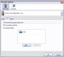
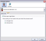
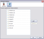

Accounts
-
Mode

Mode is used to select the method the extension uses to communicate with server.
-
POP
-
Empty Trash
The server trashcan to be emptied after every email check.
-
Download Unread Mail Only
Only emails marked as unread on the server will be download. Once an email has been read Thunderbird WILL NOT access the server copy again.
-
Download Junk Mail
Email will be download from the Junkmail folder.
-
Download Folders
By default the extension downloads your Inbox, using this option you can add additional folders for the extension to download emails from. The extension will not download from Draft, Trash, or SentItems folders.
-
-
SMTP
-
Save Copy In Sent Items
A copy will be saved in the servers Sent Items folder.
-
Multipart Message
A rich text email contains two parts a plain text and html part.
-
Domains
You can add additional emails domains that are compatible with the extension.